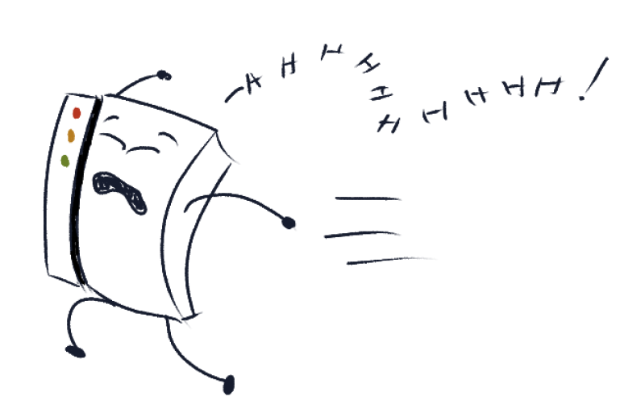

Congratulations to the 103 teams who finished the hunt by completing
the final meta and restoring the library (including 38 teams that did
it without using hints)! Special mention to 🌞💧💀 Galactic
Trendespers 🌞💧💀 for being the first to finish, in 8 hours and 34
minutes, and to Shard Sharpening Sharks for being the 17th.
We are incredibly happy with how our first public hunt went and we thank
all of our brave Library explorers who took part! Over the course of the hunt:
325 teams solved at least one puzzle
247 teams solved the first meta
41 teams completed all 30 puzzles
We'd also like to give a shout out to:
Vehemence with the first correct answer submission of the hunt,
solving the prologue puzzle
Shardinality with the first non-prologue solve of Ha! That's
a Classic! (in 4m11s)
Secret Llama Mistborn for finishing the hunt (and solving
all of the puzzles!) with the fewest guesses (39)
英文好难啊qaq for finishing the hunt with the most guesses (249)
me when I have to solve on phone in a hotel room because i'm on vacation and
Ruben for correctly answering a puzzle on the 17th guess (after 16 incorrect guesses)
The rest of this wrap-up will contain heavy spoilers for the hunt and individual puzzles.
Hunt Summary
The hunt opens with an email from the Librarian informing solvers that
they’ve found a strange looking library, and need help exploring it.
The Librarian explains that the central staircase is blocked, and that
by solving puzzles they can open it. The epigraphs from this round are
cheerful snippets of the Librarian’s thoughts, and the round 1 meta
answer is similarly innocuous - to unlock the staircase, solvers must
CHECK OUT THEIR CARD READERS.
On the second floor, the tone gets a little more ominous. The Librarian
talks about strange shifting shadows and unnerving geometries, and the meta
asks the solvers to discover what is reshaping the library. The answer to
this question is A MANIFOLD MAKER, an extradimensional entity whose presence
distorts physical space. The Librarian asks solvers to continue solving
puzzles in order to figure out how to get rid of it.
On the third floor, the influence of the Manifold Maker is clear. Epigraphs
are wildly distorted, and alternate between warped messages from the Librarian
and pieces of books and previous epigraphs folded together. During the course
of the round, the Librarian suspects that the Manifold Maker is sentient and
begins trying to communicate with it, until it is eventually convinced to
leave when solvers communicate with it their ENTITLEMENT TO HUMAN WRITES.
Without the Manifold Maker, the library returns to its previous state, and
the solvers have won!
Theme
We did not have a theme proposal stage. The idea of having a library themed
hunt was pre-chosen, as we wanted a continuation of what we had in
Shardhunt 0,
a little publicized hunt we ran in early 2021. The “misplaced book” in the
Librarian’s early message is the singular direct reference to this. We wanted
for teams who hadn’t done Shardhunt 0 (which was almost everyone) to not be
too confused, but we also wanted a quiet nod to what our team has already done.
The Library of Babel was casually proposed in early 2021 and the first meta was
written to play around with the idea. We liked it enough that we locked it in,
and this meta went on to ambitiously dictate enormous chunks of story, web,
and puzzle development.
Story and Epigraphs
The first message from the Librarian sets the premise: solvers are wandering through
the Library of Babel! While this is never explicitly stated as the Library of Babel,
with a bit of searching puzzlers can connect it to the
Jorge Louis Borges short
story without difficulty, though knowledge of this story is not explicitly needed
for puzzle solving.
To give a brief summary of the story of Shardhunt 0, solvers were contacted by a
figure identified only as the Librarian, who found an odd book full of puzzles in
their library. As solvers progressed through these puzzles, they found that the
protagonist of the book, a boy named Peter, was trapped but could respond to their
messages. The mission soon became to free him from the bookspace he’d been trapped in.
The implication is that after these events, the Librarian decided to track down the
source of the strange magical book which leads us to the library of the current hunt.
We did not publicize Shardhunt 0 widely. The benefit of the reduced scope of Shardhunt 0
was that we could run story interactions with individual teams by sending “Peter” or
“the Librarian” into teams’ Discord channels to talk with them. We had a lot of fun
incorporating story throughout the puzzle solving, and we wanted to carry this philosophy
to the current larger hunt. We had some differences in opinion about how much story solvers
would be willing to engage with, but eventually we settled on the epigraphs you see today -
brief pieces of flavor above each puzzle.
Round 1
The epigraphs for round 1 are deliberately innocuous in order to make future
changes to the Library appear more dramatic. The goal of the first round was
for the mood to remain cheerful and optimistic. While we decided to give very
few personal details about the Librarian (making it easier to follow the story
with only some epigraphs), our internal image of them was a somewhat chaotic
and perpetually tired millennial with a powerful sense of curiosity. And, of
course, a canonical cat owner 🐈⬛.
Round 2
Here we introduced the conflict: the presence of the Manifold Maker. The
unlock structure impacted this round’s story in ways that I hadn’t anticipated
while writing it. The original idea was for the epigraphs to create a sense of
creeping horror and mystery and gradually build up the sense that something is
wrong; the library is actively changing! Since the meta unlocked at the beginning,
this fact is immediately obvious and leaves the building horror as set dressing
rather than containing plot relevance. Still, as it stands, I remain pleased
with the way that the epigraphs contribute to the mood of the round.
It should also be noted that the wonderfully creepy crumpling effect was accomplished
through the CSS work of our one-woman tech team, Adeline, and it really enhanced
the mood of the messages. Our hunt is deliberately minimalistic in its art, but
the little details like this are what allowed it to work as well as it did!
Round 3
Round 3 is really where I started to experiment with the form of the story.
While we weren’t otherwise doing anything wildly radical with the story structure,
it is this part that makes me say this wasn’t necessarily written for the standard
puzzlehunt experience. I’m not sure that this story landed for everyone, or even
most people, but it’s something that I wanted to write regardless.
The core of this section of story is that the Manifold Maker, by being in the
Library and distorting it, is also gradually coming to understand the inhabitants
of the library and the things they write. I wanted to represent the Manifold
Maker as a sentient being having their thoughts represented in the folding
of the library. Each epigraph of this round was either a message from the
Librarian (distorted by the general warping of the library) or a message from
the Manifold Maker (created by folding together quotes from books and epigraphs
from the previous rounds).
Writing the Manifolder Maker’s epigraphs was both very fun and very challenging;
I was trying to convey abstract ideas in a constrained and confused format,
and in only a handful of messages. I’m a fan of art forms that find new meaning
from the same set of words and I realized that the theme of folding books would
be the perfect time for this. I also love the idea of stories being a way for
people to see into each other’s minds for a moment, and I wanted to combine that
with the central conflict of communicating with an alien being. The Librarian and
the Manifold Maker are on parallel journeys in this section: the Librarian begins
to wonder if the Manifold Maker is sentient and can be communicated with at the
same time that the Manifold Maker begins to see meaning in the texts it changes,
finally discovering that those that wrote them may also be living minds. This
played into the “HUMAN WRITES” pun in multiple ways, which is honestly a large
part of why I chose to write it this way.
Whether or not this puzzlehunt was the right place to try incorporating an
abstract musing on the nature of sentience and storytelling is perhaps a matter
up for debate, and opinions on this even within our team may vary. Ultimately,
my decision was motivated by knowing that this is the sort of story that I would
have loved to see attempted in a hunt, which means that there at least exists some
audience for this sort of thing.
Alternate Universes
There were many alternative versions of this hunt that could have run. Over the
course of our 2.5 years working on this project, we wrote and rewrote the story
several times, often completely reworking core concepts. This final version of the
story was developed largely in the last 6 months of the process, and it wasn’t fully
finalized until the week before running.
Our team was founded by fans of epic fantasy, which means that we also enjoy having
a lot of lore behind the scenes, even if it doesn’t explicitly make it into the hunt.
There is no single canon version of this - I believe every author has a slightly
different picture of events in their head - but we had a lot of discussions about
questions such as the origins of the library, the nature of the magical book from
Shardhunt 0, the activities of the Librarian during the last few years, and the other
individuals or groups that may have encountered the library throughout the years.
I suspect that our ratio of words written about this story to words that actually
ended up in this story may set a new record in puzzlehunts.
If I were writing this all again, there are certainly things about the story that I’d
change - I think we’ve all grown as writers since the beginning of this - but overall,
I’m happy with how this has turned out. I hope some of you enjoyed it as well!
Writing Process
Timeline
Library of Babel first mentioned - 02/21/2021
First R1 meta draft completed - 03/28/2021
First R2 meta draft completed - 06/10/2021
Website work begins - 08/26/2021
Library work begins - 09/17/2021
First R3 meta draft completed - 09/05/2021
First full-hunt testsolve - 07/02/2022
Second full-hunt testsolve - 07/23/2022
First R3 “minipuzzle” draft completed - 06/25/2023
Third full-hunt testsolve - 06/30/2023
Shardhunt announced - 07/05/2023
Metapuzzles
The Round 1 meta was the first to be written and it defined
the entire structure of the hunt. Originally,
Marked Books
used the original Library of Babel website
constructed by Jonathan Basile. You can still find some familiar bookmarks there!
However, we had significant concerns about relying on a third party resource
for such a crucial part of the hunt, such as the ability of the site
to withstand a horde of puzzlers. We decided that either the hunt
would not go ahead in its current form, or we would have to build
the Library of Babel ourselves.
While discussing the viability of this decision, we drafted metapuzzles
for Round 2 and 3. Both of these rounds had a significant number of
drafts completed exploring different concepts; the dates in the
timeline reflect first drafts for the “final” meta which ended up
in the hunt. As you can see, it took many months for us to find meta
versions with which we were sufficiently happy to proceed with
puzzle writing. Even so, the current version of the capstone meta
Entitlement
was fully rewritten in late June of this year. (You can read more about
that in the author’s notes for that puzzle.)
Puzzles
Once the metapuzzles were mostly finalized, we opened up feeder writing
with very little restrictions, except for rough difficulty benchmarks
from early to late hunt. Our definition of difficulty changed over the
course of writing, as well as our standards for individual puzzle quality.
This led to a lot of discussion, shuffling, and (re)writing of earlier
round puzzles a few months before the hunt for answer slots that we
previously thought were mostly finalized. This was made extra spicy
by our rather constrained feeder answers.
By our best reckoning, the first feeder puzzle to be drafted in some
form (which still made it into the final hunt) is
Join or Die,
which began writing for its current slot in late April 2021. The first
Round 2 puzzle to be drafted in some form was
KarAO3ke,
in late September 2021; the first Round 3 puzzle was
Through the Looking-Glass,
also in late September 2021 (although initially as a Round 2 puzzle). The
last feeder puzzle drafted was
The Only Sanderson Puzzle,
written in late July 2023 for a recently vacated slot.
We might estimate that for every puzzle released in the final hunt,
approximately one more was written and cut in some stage of development
(not including drafts which continuously evolved into eventually-released
puzzles).
First Round of Testsolving
In mid-2022 we had what we viewed as a viable product, and did two
full-hunt testsolves with two groups: members of The Blob Wizards
and the ghostbloods, which are two other small puzzlehunt teams. These
testsolves were partially successful. While they gave us confidence
in our core hunt concepts, they also exposed flaws in a number of
feeder puzzles, necessitating a significant amount of further drafting time.
We therefore canned our tentative release date, and Shardhunt was
left to an uncertain future.
Over the next year, large overhauls were made to the hunt. We replaced
the initially more ambitious story with a more communicable one.
Approximately a third of the puzzles in the hunt were either rewritten
or completely replaced, and most others were altered in smaller ways.
The Library had a significant amount of development done by our one-person
tech team to improve the UI and UX. A prologue was added in
order to force solvers to acquaint themselves with the Library early on.
Additionally, the original second part to the Round 3 meta was cut, and
replaced with its current minipuzzle structure.
Second Round of Testsolving
Approximately one year after that initial round of testsolving, we
approached a third group (Please Clap) for a final round of examination.
We thought that the hunt was, again, in a relatively viable state for
final release. Due to the amount of time we had spent working on the
hunt, we made the decision that if the testsolve was not sufficiently
successful, Shardhunt would not be released in any form.
Thankfully, we were happy enough with the testsolve that we decided to
announce the event, which we did only a few days later. The final month
leading up to release was spent fixing problems discovered during that
second round of testsolving, including errata and pacing issues.
Reflections
Size and Ambition
We didn’t set out to make a hunt that would take two-and-a-half years
to finish. Hot off the back of a set of 11 puzzles released to a small
number of people, we wanted to follow it up with a cautiously larger hunt.
We wrote puzzles like Macbeth killed people; at first, with a little doubt,
then enthusiasm, and at last with a growing horror as it slowly transpired
that there was no true end in sight. We were an extremely small crew
(despite how it seems in our credits). Participation ebbed and flowed.
Full-team meetings rarely consisted of more than three or four people.
It is, therefore, a testament to the consistent painstaking work and belief
in this project demonstrated by a small few that this hunt was able to happen.
Those people are, in no particular order: Adeline Wong, Thomas Gordon,
Ella Sheffield, Yanaphat Hemrattaphan, and Olga Vinogradova.
We are incredibly proud of Shardhunt. We are also incredibly glad that
we are finished with writing it.
A Second of Eternity
One issue with taking nearly 30 months to write a hunt is that your ideas
may get sniped. When we selected the theme and began construction, no recent
hunt had done anything book-themed. In recent memory, however, a number of
hunts have had book-related themes, including (but not limited to) the
2022 MIT Mystery Hunt.
However, we decided that the theme was not an issue; and ultimately
enough time passed that any such similarities didn’t matter.
Speaking of the 2022 MIT Mystery Hunt, the feeder puzzle
Word Search of Babel
gave us a heart attack when we unlocked it. Thankfully, there wasn’t any overlap
between what that puzzle was doing and what we were already planning to do, which
allowed us to continue ahead without a course correction.
Unlock Structure
Shardhunt adopted an unlock structure which was more common in earlier
puzzlehunts, but has since fallen out of vogue. Namely, the metapuzzle
of a round unlocks at the start of the round, instead of after a certain
number of solves. This used to be extremely common, especially in the MIT
Mystery Hunt; recent online hunts have instead opted to gate metapuzzle
unlocks after a certain number of feeders.
There are many excellent design reasons why a constructing team may gate
metapuzzle unlocks like this. However, we chose to unlock metapuzzles early
instead for a few key reasons:
We wanted teams (particularly smaller teams) the opportunity to
solve metas early and feel smart.
We wanted to give teams time to experiment with the metas during the round
if they wished, instead of forcing them to encounter them after all the feeders.
Unlocking the metapuzzles early allowed for a “purer” experience (i.e.
the only thing preventing teams from progressing was a lack of feeder answers,
rather than a restricted unlock structure).
Some metas had information which would become available after every feeder
solve, which necessitated the meta being available at the start.
We wanted to experiment.
Members of the writing team almost unanimously prefer to see metapuzzles
open early when it makes sense for the hunt. Handling the metapuzzles and the
feeder puzzles at the same time allows for a more complex and interesting experience
than doing all the feeder puzzles, then switching to focusing on the metapuzzle. Therefore,
we were interested to see how this experience would translate to a smaller online
hunt with smaller team sizes.
The feedback we’ve received about this change has largely been positive! Many teams
enjoyed the ability to see metas as soon as the round unlocked, including our testsolvers;
over 25% of respondents to our feedback form reported that the unlock structure significantly
increased their enjoyment of the experience. (The rest mostly didn’t care.) We couldn’t
find a strong correlation between someone’s level of enjoyment of this change and their
placement in the leaderboard.
However, we are aware of a few teams – which primarily placed top 10 in the leaderboard –
that managed to solve metapuzzles with only a few (50-55%) feeder puzzles. Those teams
may see fewer feeder puzzles in the hunt compared to the average team and were also more likely
to speak negatively about early meta unlocks. Often members of their team start backsolving
feeders before others are able to properly look at them. Generally, high-placing teams
either loved or hated the change.
It’s up to future constructors whether they choose to continue experimenting
with early meta unlocks, or whether they return to the status quo of constraining
them behind a certain number of solves. We do think, however, that since online
hunts are overwhelmingly written by groups of people who do place high on
leaderboards, this might explain why the early meta unlock structure has all
but vanished over the past few years.
We hope, given the relative success of Shardhunt, and the popularity of early
meta unlocks among broad sections of the community, that a few more hunts
experiment with this unlock structure as well.
The Paper-Folding Meta
We well knew that a metapuzzle involving paper construction would be a contentious
inclusion–and, indeed, it was. Flexibility
has the most diverse ranges of opinions of almost any puzzle, meta or not. We received long essays
about why paper construction puzzles in hunts were objectively bad. We also received long
essays about why Flexibility was someone’s favorite puzzle in the entire event. We think
that both of these parties have good points to make.
These sorts of puzzles can provide issues for teams trying to collaborate. Since they
can require manipulating physical objects, large teams can get gated behind one person
trying to construct the object, especially if they assume that a printer is required.
There were several reasons for which we strongly felt this puzzle deserved to run
unchanged. Firstly, the puzzle is entirely solvable (albeit more difficult)
without constructing any physical object at all. We are aware of teams who solved
Flexibility without needing to construct the object in question, given the number
of resources online describing its behaviors. Secondly, the puzzle is approachable
without access to a printer. Unlike many paper construction puzzles, the specific
design of the example construction is completely unimportant, and a fully functional
version can be constructed with a strip of paper, a pencil, some glue, and nothing else.
(The need for glue can also be supplanted with a bit of ingenuity.) Thirdly, we liked
it. We knew that if the puzzle went into the hunt, some people would really enjoy it.
We’re glad that this puzzle found its audience. Over 25% of people who responded to our
feedback form rated the puzzle as “very fun”, and for a time it was the only puzzle to
have a perfect 6/6 fun rating on our individual puzzle surveys.
In the end, Flexibility (like many other things in Shardhunt) was a swing for the
fences. Because, if you’re spending two-and-a-half years writing the puzzlehunt,
what’s the point in doing anything else?
Difficulty Scaling
We’re fairly happy with the scaling of difficulty across the course of the hunt.
Puzzlehunts cater to a wide variety of solvers with vastly different levels of experience.
Thus, we generally wrote Round 1 puzzles to introduce puzzlehunt concepts to new solvers;
Round 2 puzzles could be easier, but were allowed to be more difficult if suitable;
Round 3 was written without remorse.
Near the end, we shuffled the placement of some puzzles (and wrote new puzzles to fill the gaps)
in order to smooth out the difficulty curve. For example,
Pushing the Rules was originally written
for a different answer in Round 1, but got revamped for a new slot when it consistently
tested much more difficult than other Round 1 puzzles. A different puzzle was written
to replace its old position, and another was cut to support this change.
There are still a few outliers, however, such as Identification
in Round 2. While we were aware of this difficulty variance, we strongly wanted to
include the puzzle in the hunt, and were not able to move it to Round 3 due to
its answer constraints. We therefore unlocked it early in the round, so that
teams would have enough time to inspect the puzzle and give a fair crack at
solving it.
We also knew that Sandwich Shop was an easier
puzzle despite being in Round 3. We thought that teams would enjoy a quick and easy solve
at the end of a long and difficult round, and generally we found this to be the case.
Certain Pasts, Uncertain Futures
We aren’t sure whether we’ll write another Shardhunt. While we do have many ideas,
we would also all like a break! This version of Shardhunt took nearly 30 months to complete.
We also don’t know how long another Shardhunt might take to finish, if we choose
to start one.
Tech and Hunt Operations
Library Implementation
The generation algorithm itself is adapted for Python from
Keiwan Donyagard's Offline
Library, which they graciously allowed us to use and warp to our eldritch needs.
It uses a linear congruential generator to simulate randomness in page text, then does
a bunch of clever cutting and stitching so any potential patterns are made much less obvious.
Since the “randomness” is actually algorithmic, the search feature simply inverts the algorithm
and finds the possible hex/wall/shelf/volume/page seeds that would generate a given block of text.
It’s a real neat piece of work, and we’re incredibly grateful to Keiwan for allowing us to adapt it!
The Library implementation is entirely algorithmic--there’s no “cheating” involved.
Every page teams saw during the hunt is the original state of that page, as generated by
the algorithm, and discovered amidst the vast expanse of the Library using the search feature.
Even the minipuzzles for 🔍🔍🔍 are located by modifying the search query, not the page itself!
If one were to manually enter the hex, wall, shelf, volume, and page for a minipuzzle, the resulting
text would be exactly the same as the search result.
Web Development
Our website is a modified version of gph-site,
which keeps things mostly the same aside from the removal of websockets,
because we didn’t want to deal with them. It runs on an EC2 machine provisioned
from Amazon Web Services (a t3.2xlarge during hunt, though it’s since been downgraded
to a t3.medium). It’s backed by gunicorn and served by nginx--reliable solutions,
nothing fancy. Our database is a postgres service, also provisioned through AWS
(a t3.large during hunt, but this was almost definitely an overestimation.
It’s since been downgraded to a t3.micro).
Web Design + Art
Once we decided to move from our Shardhunt 0 PDF format to gph-site,
we quickly decided to have a simple black and white aesthetic. Not only is this reflective
of the printed word, but it was also a way to minimize web and art work for our first hunt.
This way, any splash of color (like the logo or the victory page)
really stands out, just like an illustration in a book would! One of the first hunts we solved as
a team was Puzzle Potluck 2. We were inspired by
the simplicity of that hunt’s presentation and wanted to mimic that... just with more serifs.
Email
Teams may have noticed the lack of mass email correspondence. The choice for this ranged
between “conscious” and “we have no time, so it’s low priority.” We were rather scared of the
complications which several previous hunt organizing teams experienced in sending large numbers of emails.
As hunt drew closer, we decided to not deal with it. If we run a hunt
again, this is something we would like to improve on.
Teams may also have noticed the automated email responses for
Folk Wisdom and It’s Your Turn
submission prompts. This was a compromise between wanting to have some
number of action submissions and minimizing the load on our small running team. We knew that having auto response was a risk to
the integrity of these puzzles, since teams could choose to just send a
blank email without a real submission. However, we are happy to report that this happened infrequently
and we received many lovely submissions. We assure you that we looked
at each and every one (albeit much slower than the auto-responder...) and have compiled our favorites in the Appendix.
Discord
We handled all hunt correspondence through Discord, and used webhooks to notify us of
puzzle solves, hints, and emails. All of our gmail correspondence was forwarded to
Discord through Integromat.
Hinting
Our hinting team was rather small, consisting of about half of the puzzle authors + a few full
hunt testsolvers (thank you friends!). Despite that, we spanned no fewer than 4
timezones spread around the world and were generally able to keep the average hint response
time low. However, by the second weekend this became more difficult to achieve.
We had a rather loose hint follow-up policy. This meant that even though hints are a
finite resource, teams often asked for follow-ups for the next step, outside of the
scope of the original question. This increased the hinting load and in retrospect we
could have been stricter about what counts as a follow-up hint given our crew size.
However, we also want teams to have fun :) so it’s difficult to say “no” to someone
asking for help. Out of the 1927 hint requests received, 725 (38%) are marked as
follow-ups. The flip side of this is that we got some kind messages in follow-ups; thanks, guys :)
Tip Jar Link
We hope you enjoyed Shardhunt! We do this because we enjoy it, but if you'd like to help us
offset server costs, you can donate to our tip jar.
Credits
All attributions are listed alphabetically.
Puzzle Authors: Thomas Gordon, Reagan Guan, Yanaphat Hemrattaphan, Abhinav Makam,
Ella Sheffield, Julie Sheffield, Nathan Sheffield, Mitchell Rosenberg, Olga Vinogradova, Adeline Wong
Web Development: Adeline Wong
Postprodding: Thomas Gordon, Olga Vinogradova, Adeline Wong
Story Epigraphs and Post-Meta Emails: Ella Sheffield
Story Concepts: Thomas Gordon, Mitchell Rosenberg, Ella Sheffield, Adeline Wong
Art: Jaclyn Cohen, Olga Vinogradova
Full Hunt Testsolvers: The Blob Wizards, ghostbloods, Please Clap; including
(but not limited to): Adam Busis, Ethan, Farid, ffao, Zach Kaplan, Kaz, Autumn Leaves,
Michael Liang, Jonah Nan, Darshan Patil, penzo, Pivotal, Rusty, Summit, Thomas/Sart, Tim/Soni
Hint Queue Helpers: Michael Liang, Jonah Nan, Tim/Soni(!)
We are particularly grateful to our external testsolvers and hinters. Without them, this hunt could not have happened.
This hunt also could not have happened without the
Library of Babel codebase
created by Keiwan Donyagard, which he graciously allowed to use.
We would also like to acknowledge Jonathan Basile, creator of the original
Library of Babel website, which provided the original inspiration;
and Jorge Luis Borges, who wrote the original short story that started it all.
Appendix
General Stats
The progress of the first 17 teams to finish Entitlement was:
DESECRETE – many teams – a truly inspired pun, but alas, not the correct answer
MEMECRETE – The Gates of Deepest Power
Join, Or Die
OUTSTANDINGMOTHERHOOD – honkerino poggerino
████████
THEBATTLEOFTHEFIVEARMIES – Tapirs for Hope – not everything we do has to be related to a fantasy book...
WAITDONTTELLMETHEANSWERISLITERALLYREDACTED – Weirdietols United 2 (WUTs)
Marked Books
FREAKOUTTHEIRCARDREADERS/THEIRCARDREADERSFREAKOUT – 5 teams

Our fanart of the wrong answer
Flight of the Babelbees
PLZDONTTELLMETHISISANINSTRUCTION – Team Time Vultures
NOOOOIDIDNTWANTTOCOMPUTETHAT – Team Time Vultures
OHDEARGODTHERESANOTHERSTEP – :praytrick:
Identification
IMAGINETHATMYTEAMATESAIDTHATTHISONEWILLBEANEASYONE – Time Vultures
Interplanetary Hopper
FROGSOUNDDRIVE – Cult of Idiotic Avians
It's Your Turn
GETYOURSECONDHAND – 5 teams – we are a bit concerned if you didn't have it already
The Launch of This Puzzle Has Been Delayed
[bee movie script] – The Puzzledome – perhaps a reference to Babelbees?
THESUBMISSIONOFTHISSOLUTIONHASBEENDELAYED - Soup Has A Roast Duck
Death of the Library
SEVENTEENTHSHARD – kwargers – sadly, we were not powerful enough to fix the Library and that's why we need you :)
Submission Compilations
If any team wishes to have their submission removed, please let us know!
It's Your Turn
TAKE THE OPPORTUNITY: We learned a lot of fun facts and stories about animals, team naming schemes, and oddly enough, poop.
Here are our favorites!
GET YOUR SECOND WIND: We got a lot of proof of hydration, but we also got more … creative entries.
Some of you have very cute, fluffy, and hydrated teammates!
SLASHING MELEE WEAPON: Join us in cowering before these unusual weapons of destruction!
RUN AROUND DIFFICULT TERRAIN: There are apparently many ways to overcome Floor is Lava...
Folk Wisdom
Thank you for all the useful and creative pieces of ADVICE. We learned a lot, these are truly rules to live by. Here are some of our favorites!